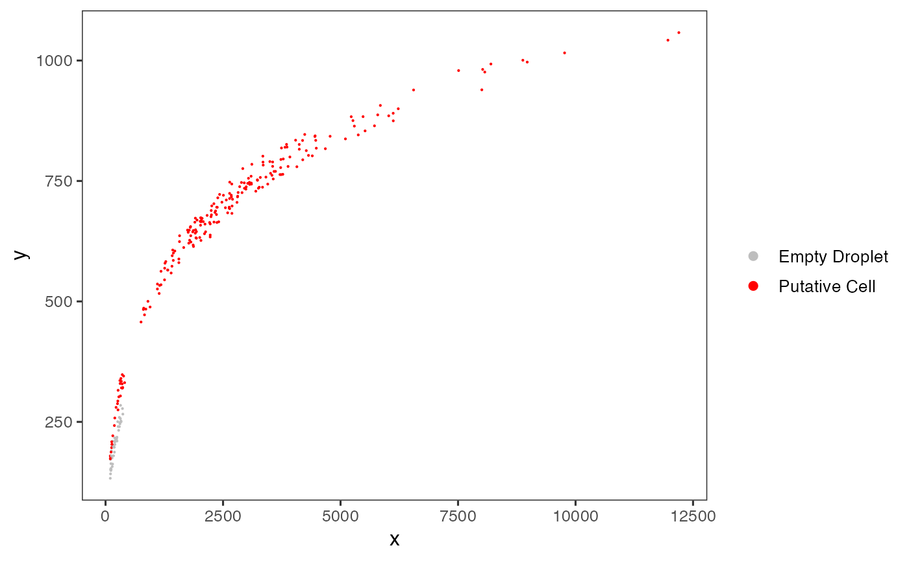

A plotting function which visualizes outputs from the
runEmptyDrops function stored in the colData slot of the
SingleCellExperiment object via scatter plots.
plotEmptyDropsScatter(
inSCE,
sample = NULL,
fdrCutoff = 0.01,
defaultTheme = TRUE,
dotSize = 0.1,
title = NULL,
titleSize = 18,
xlab = NULL,
ylab = NULL,
axisSize = 12,
axisLabelSize = 15,
legendTitle = NULL,
legendTitleSize = 12,
legendSize = 10,
combinePlot = "none",
relHeights = 1,
relWidths = 1,
samplePerColumn = TRUE,
sampleRelHeights = 1,
sampleRelWidths = 1
)Input SingleCellExperiment object with saved
dimension reduction components or a variable with saved results from
runEmptyDrops. Required.
Character vector or colData variable name. Indicates which
sample each cell belongs to. Default NULL.
Numeric. Thresholds barcodes based on the FDR values from
runEmptyDrops as "Empty Droplet" or "Putative Cell". Default
0.01.
Removes grid in plot and sets axis title size to
10 when TRUE. Default TRUE.
Size of dots. Default 0.1.
Title of plot. Default NULL.
Size of title of plot. Default 18.
Character vector. Label for x-axis. Default NULL.
Character vector. Label for y-axis. Default NULL.
Size of x/y-axis ticks. Default 12.
Size of x/y-axis labels. Default 15.
Title of legend. Default NULL.
size of legend title. Default 12.
size of legend. Default 10.
Must be either "all", "sample", or
"none". "all" will combine all plots into a single .ggplot
object, while "sample" will output a list of plots separated by
sample. Default "all".
Relative heights of plots when combine is set. Default
1.
Relative widths of plots when combine is set. Default
1.
If TRUE, when there are multiple samples and
combining by "all", the output .ggplot will have plots from each
sample on a single column. Default TRUE.
If there are multiple samples and combining by
"all", the relative heights for each plot. Default 1.
If there are multiple samples and combining by
"all", the relative widths for each plot. Default 1.
a ggplot object of the scatter plot.
data(scExample, package = "singleCellTK")
sce <- runEmptyDrops(inSCE = sce)
#> Wed Apr 23 11:39:12 2025 ... Running 'emptyDrops'
plotEmptyDropsScatter(inSCE = sce)
